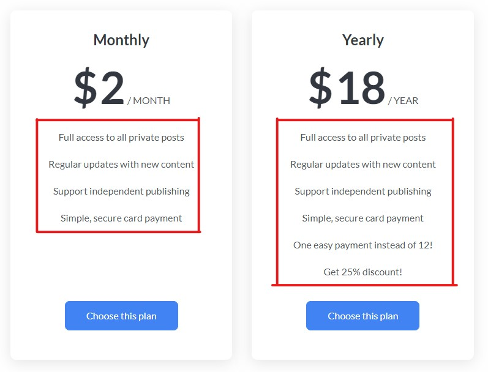
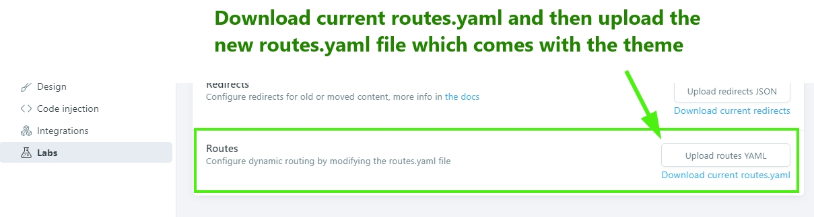

Getting Started
Before you start
This documentation is intended to help you properly install and configure the theme on your ghost blog. Make sure to keep a backup before any modification.
If you are new to Ghost then some links may be useful to know about ghost itself:
- Ghost Official documentation: https://ghost.org/docs/
- Ghost Help and support center: https://forum.ghost.org/
Configuration & Installation
To use the theme extract the main downloaded zip file and first of all make a backup of the theme main folder. theme backup is recommended because you can always get back to the fresh copy.
After extracting you will find a folder named similar to theme name. This folder is the production ready ( live site ready ) theme. After the required setup you will make a zip of this folder and upload it to your ghost site.
Please read through the documentation to setup the theme before installation. For heavy customization or to change color or other CSS, see "Development" section below in this documentation.
How it works
This theme is made to make documentation site. So the contents are arranged in that manner. When you write content for your site which uses this theme. Keep some point in mind.
- The tags are used to group the posts in deferent category.
- Tag names are category name.
- Tags are ordered in ascending order.
- Posts in each tag are also ordered in ascending order.
- An special tag FAQ is used for FAQ posts.
Adding Github link
There is a Github button in the top navigation bar of this theme. To add your github link to this button please follow the steps below.
- Open
header-nav.hbsfile which is located in partials folder. - At line number 4 in that file you will see this
<li class="nav-item"><a href="#" class="nav-btn">{{> icons/github}}{{t "Github"}}</a></li> - Remove the href value # and add your github link there.
- save the file.
- To add the github link to footer github icon see Social links section below.
Intro Title on home page
In this theme home page, there is a title text (How can we help you?) at the top. If you want to change that title please follow steps.
- Open
header.hbsfile which is located inpartialsfolder. - At line number 28 you will find the text (How can we help you?). Edit and add whatever you want to show to your visitors.
- Save the file.
API key for search function
We have to generate an API key and set that key in our theme. Without this API key setup, the search, functionality will not work. Please follow the steps below.
- Go to your admin dashboard and visit "Integrations" setting page.
- Scroll Below and click on the "Add custom integration" button.
- Give it a name ( anything you want, it does not matter). You can just name it "search"
- Save that and copy the "Content API Key".
- Now open "api-key.hbs" file which is located in partials folder.
- Remove everything including the curly braces (It contains only a comment) in that file and paste the API key you have copied from your admin dashboard. Save the file.

Configure disqus comment
To enable disqus you need disqus_shotrname for your site. To setup the disqus comment properly please follow the steps below.
- Go to disqus.com and sign up.
- After log in go to admin dashboard.
- Then follow the instruction and add your website there.
- At the time of adding your site you will get a disqus shortname, copy that.
- Now open
disqus-comment.hbsfile which is located in partials folder. At line number 4 you will see below code
var disqus_shortname = 'example'; //replace "example" with your own shortname
var disqus_shortname = 'yourDisqusShortnameHere';
If you want to remove the comment section in your site please follow the steps below.
- Open
post.hbsfile which is located in theme root folder. - At line number 49 you will see this code
{{> disqus-comment}} - Delete this line and save the file.
Adding social links
To add the your social links to the icons in footer, please follow the steps below.
From your ghost dashboard, Go to general setting page and scroll down. In social account option, you can add Facebook and Twitter link there. This facebook and twitter will be linked with the icons in footer.
There is no option to add other social links directly from dashboard. Following are the steps to add other links.
- open
social-links.hbsfile located in partials folder. - From line number 10, you can add different social links. Replace the
#for eachhrefvalue with your own profile links. - If you want to add other social links or want to remove one, please see all the available icons in "partials > icons" folder.
The code in social-links.hbs file, where you will add your links, will look like below.
<a href="#" title="{{t "Github"}}" rel="noopener" class="tooltip">{{> icons/github}}</a>
Contact call to action box
In this theme there is a contact Call to action above the footer. All the code of this section is in contact-cta.hbs file which is in partials folder.
If you want to change any text or button link of this section do that in that file.
Members
Ghost introduced Members feature in Ghost version 3.0.0. This members feature is fully supported by this theme.
You can enable this member feature from the lab page in your ghost dashboard. Before Uploading the theme to your site you have to edit the text ( key points ) in your monthly and yearly pricing plan. Please follow the steps below to edit the key point you want to show in your pricing table.
Please follow the steps below to edit the above mentioned key points in each pricing table.
You will find following 2 files within the theme which are located in partials/members folder within the theme folder. These are three files for 2 different pricing plan.
- pricing-table-monthly.hbs
- pricing-table-yearly.hbs
Open First file and start editing.
Starting from line number 11 in each file you will see those key points in each line one after one. See example as below.
<li>Full access to all private posts</li>
<li>Regular updates with new content</li>
<li>Support independent publishing</li>
<li>Simple, secure card payment</li>
Edit those sample text to add you own text. you can add as many line as you want.
When you are done with editing a file. Save that file and continue with the next file. Follow the same instruction to edit all files. Finish editing these files and you are ready to go to the next step.
If you do not want to use any membership feature then you can just disable that in your ghost dashboard and the theme will not display any membership specific part.
If you do not want to use the paid membership feature but still you want to allow your users to subscribe for free to collect their mail address then you have to do one small thing.
- Remove member specif links from the header menu.
Open header-nav.hbs file which is located in partials folder. Remove line number 4 to 20 from that file. The code will look like below.
{{#if @labs.members}}
{{#if @member}}
<li class="nav-item member-link">
<a class="nav-item" href="/account/">{{t "Account"}}</a>
</li>
<li class="nav-item member-link">
<a class="" href="#signout" data-members-signout>{{t "Sign out"}}</a>
</li>
{{else}}
<li class="nav-item member-link">
<a class="" href="/signin/">{{t "Log in"}}</a>
</li>
<li class="nav-item member-link">
<a class="nav-btn" href="/signup/">{{t "Sign up"}}</a>
</li>
{{/if}}
{{/if}}
Installation
If you did all the steps which are mentioned above, then you are ready to install the theme.
Ones the necessary configuration is done, make a zip of the modified theme folder.Now login to your admin area and go to Design. In that page scroll down and you can find "Upload a theme" button. Upload the theme zip which you have created while ago. After finishing upload, activate the theme.
You also have to upload another file routes.yaml in your ghost site to work all the membership related page correctly.
Go to lab page in your dashboard, scroll down and you will see an option for routes. There is a button to upload routes YAML and a link below that button to download the routes.yaml which is being used currently. Download that file and and keep as a backup.
IN the downloaded zip you will find a routes.yaml file which comes with this file and specific for this theme.
Upload that file. Using "upload routes YAML" button.
Please note, if you are using self hosted Ghost then may be you need to restart ghost to take effect the new routes file. If you are using Ghost (pro). then you don't need to do anything here.
If you want to install the demo data to make your site as the preview then you can go to your-site-url/ghost/settings/labs/ and then import the digidoc.ghost.demo.json file there. This file is located in demo data folder in main download folder.
Writing posts / articles
This theme groups posts based on tags, and show them in ascending order by published time/date. Which means firstly added post or tag (category on home page, and sidebar links in single post view ) will be shown on top and last post or tag will be shown last.
This ordering and grouping is made for documentation writing workflow and user reading experience.
In blogs, user wants to read the latest post( lastly added post) first when they visit any blog site.
But in case of Documentation, user want to go through beginning to end. Also who write this documentation (in this case you) prefer to write beginning to end.
So to match both case and build better user experience we made the order ascending. But this not means that you can not add any new article in a category later.
At first before writing and publishing any post / article, create the category in order ( top to bottom or start to end ) in which you want to show guide through your user.
To do that just create a tag for each post group (category and tag are same thing here) by visiting your admin dashboard tag page.
After that write posts and add a tag to that post to show that post in that tag group.
Adding images to tags / categories
In home page each category (post group) shows an image. Those are tag images.
Add an image to each tag and those will be shown there. Preferred image size ratio is 1:1 which means square image. In demo we used icons from flaticon (https://www.flaticon.com/ ).
Navigation links
Ghost support two set of navigation. In this theme the primary navigation will be shown at the top of the page and secondary navigation will be shown in the footer.
To add links to you static page please follow the steps below.
- Create a new page in your dashboard.
- Copy the url for this page from the page settings panel.
- Go to Design page in your admin dashboard.
- Add a label and the url and save it.
- Now the theme will show newly added link in navigation.
FAQ page and link
In this theme FAQ is a different collection of posts.
At first add a link in the navigation for FAQ list. The url should be like this yoursite.com/faq/. This link will show all the FAQ article list as you have seen in the demo. Maybe you are not seeing any article list on this page in your site at this point. It is because you do not have any FAQ article yet.
To create an FAQ article, just create a post and then add tag FAQ. Save the file and visit the above mentioned link. The new post will be shown there.
Create as many FAQ post as you need Using the FAQ tag.
Change log page
Change log page uses a custom page template. In this custom template a version list will be shown within the sidebar. The version list will be generate automatically based on the content of the page.
To create the changelog page follow the steps below.
- Create a new page.
- From the page settings panel, right side of the editor page, select template option "Changelog template"
- Add your content in the page and publish it.
- Please remember, make the version titles heading level 2. Otherwise the automated version numbers list will not be generated in the sidebar.
- Other than that, you can free to format your changelog content as you want. For example In the demo site unordered list being used. and a divider used at the end of each version.
Contact page
In the demo formspree service is being used as contact form.
If you want to get the same look of your form then find . You will find a file name contact-form-code.txt file within the downloaded zip. Open that text file and copy entire code from there. Now edit your contact page in ghost dashboard. Add an HTML card in your page and add the html code which you have copied from contact-form-code.txt file. Don't forget to change the dummy email address (your@email.com) with your own email address. Also activate same email address with formspree.
Theme Translation
Ghost introduced Theme translation and blog localization feature in version 1.20.0. We implemented translation support to this theme. Please follow the steps below to translate this theme in your language. Please follow the steps below to correctly translate the theme in your language.
- Within theme folder, there is a folder named "locales". In that folder by default you will find a file named "en.json". This is the default file for english language and you have to use this file to create your own language file.
- make a copy of en.json and give a name following this format
[language_code].json( example: for french fr.json for German i.e. Deutsch "de.json for Russian ru.json etc. ) - If you are not sure about what is you language code then you can visit this wiki page and see. Use the two letter (ISO 639-1) code.
- Now open the newly created <your_language>.json file in text editor. You will see "KEY": "VALUE" format in each line.
- In english language KEY and VALUE are same. Now you read the left part of the
:which is KEY part, and change the right part which is VALUE part to your own language. - After finishing the translation Save the file and upload the theme to your site.
- Go to your admin area, Visit "Genera" setting page and change the "publication Language" option. By default there is "en" for english. Add your own language code there in place of "en" and save the settings.
- Visit your site, If everything goes right, you will see all the theme related text in your site is in your translated language.
Development
Theme Customization
If you need to add only small css then you can add using Ghost's Code Injection feature. In "blog header" box you can add css like below examle. replace the css with your own css between the <style> tag.
<style>
.header-wrapper .text-logo {
color: #076eff;
}
</style>
Detail customization prerequisite
This theme is built using Gulp to compile javascript and CSS. CSS is written in SCSS. So if you want to modify the theme color, styles or appearance or anything you want to customize, before doing that you need to setup development environment setup.
Please follow all the steps below one by one to do it.
You need to have installed node js and gulp installed in your local machine.
- If you don't have nodejs installed in your machine then visit nodejs.org and download and install latest LTS version of node js.
- After installing node js open a command prompt or terminal. Then type
node -v. If it shows a version number then node js is installed correctly. Also enter this commandnpm -vto see npm ( comes with node js) is installed properly. - After installing node js you need to install Gulp CLI globally in your machine. So in your terminal or command prompt enter this command.
npm install gulp-cli -g. It may take some time, it will install Gulp CLI globally in your machine. Now you have done the environment setup. - At this point go to the development theme folder. In downloaded zip there is a folder named "development". Within that folder you will see a folder named as the theme name. Enter in that folder and run command prompt / terminal here. Or you can navigate to this folder within already running terminal.
- Now enter command
npm install. It may take some time. It will install all the development dependency within the project. It may show some warning, don't worry those are OK. - At this time you are ready to modify theme, Run one more command
gulpin the terminal. It will initially compile all files and star to watch file changes. Keep the terminal open and start customizing the theme.
How to Change Color or CSS
In the theme folder you will find "assets > scss" folder which contains all the theme styles written in SCSS.
To change any style / css you need to modify here. In SCSS folder you will find a folder named "components" which contains a bunch of .scss files which are part of the whole theme's style. and all those files are imported in a specific order in "screen.scss" file located in "scss" folder root outside of "components" folder. please dont edit that file.
To change the Theme color please follow the steps below.
- Open the
_color-and-font.scssfile in your code editor. - Now you have to change the color hexcode (#xxxxxx) in this file and save the file.
- If you have followed the above section of instruction ( Detail customization prerequisite), and already running terminal with the gulp command then the file changes will be detected and if there is no error in your file then it will be automatically compiled.
The _color-and-font.scss file looks like below.
/*=====================================================
Font
=====================================================*/
$font-family: 'Lato', sans-serif;
/*=====================================================
Colors
=====================================================*/
$theme: (
body-bg: #ffffff,
theme-color: #4183F2,
theme-color-lighten-10: #548ff3,
theme-color-lighten-50: #a0c1f9,
light-bg-color: #F5F8FC,
text-color-normal: #505763,
text-color-dark: #333840,
text-color-light: #939DAD,
border-color: #E8E9EB,
shadow: 0px 5px 25px 0px rgba(0,0,0, 0.1),
code-bg: #1d2635,
code-header: #060d18,
success: #0ca910,
error: #f0134d,
);
$black: #000;
$white: #fff;
/*** PLEASE DO NOT EDIT BELOW THIS LINE ***/
:root {
@each $name, $value in $theme {
--#{$name}: #{$value};
}
}
After modifying the theme css when you are done and want to install the final theme in your live site, do the following.
- Go to running terminal ( terminal is navigated to development theme folder and running
gulpcommand to watch the file changes ) - Press Ctrl + C or Cmd + C in your keyboard to end the running task.
- After ending running task enter this command,
gulp build. This command will build the production ready ( live site ready ) theme package within a folder named "build". - After doing the
gulp buildif you need you can configure the theme options ( such as disqus shortname, social links etc ) then use this commandgulp zip. It will make a folder named "dist" and make a zip of the contents of "build" folder within "dist" folder. - Now you can upload this newly created zip in your ghost admin panel.
Changelog
V 1.3.0 - October 08, 2020
- Fixed breadcrumb on FAQ page showing twice.
- Removed Fuse Js and added searchinGhost plugin to improve search functionality.
- Adder loading indication in membership related buttons.
- Added 3 new notifications.
- Updated translation file.
V 1.2.2 - April 27, 2020
- Fixed table of content always visible, it should not be visible when there is no heading.
V 1.2.1 - March 12, 2020
- Improved search result click UX.
V 1.2.0 - February 18, 2020
- Added table of contents in single post view.
- Added Disqus comment lazy loading.
V 1.1.0 - February 16, 2020
- Added full membership feature
V 1.0.0 - February 15, 2020
- Initial release
Source and Credits
The fonts, icons and images used in this theme are listed below.Font
Icons
Images
- Tag Images (icons) from Flaticon